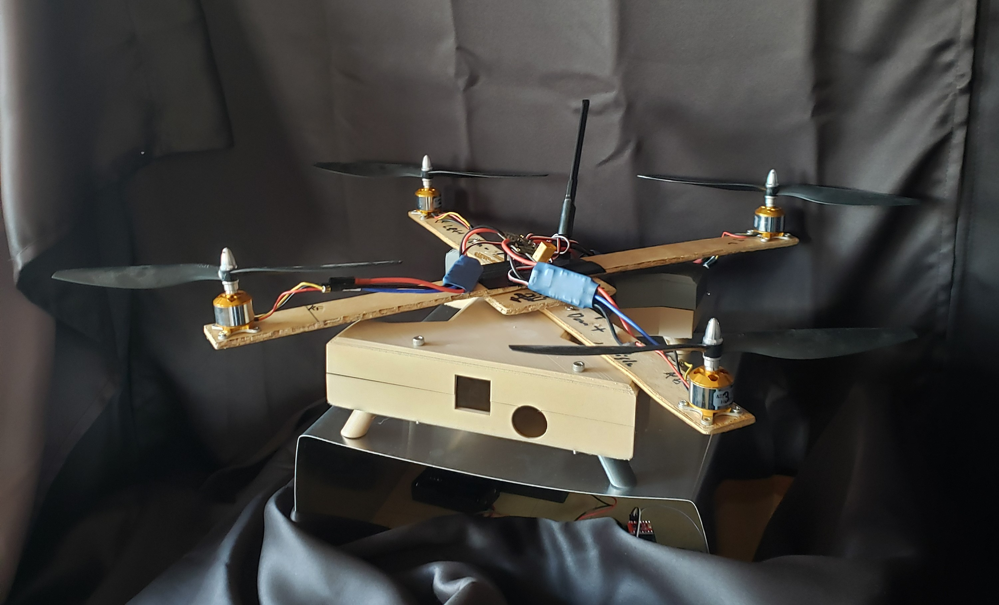

The first entries describe the control systems used in the land based vehicle, beginning with a calibration algorithm that ensures that the steering system is aligned.
Servo Calibration Script (Python)
All servos run through this script before being used for the land vehicles obstacle avoidance algorithm.
import time
import RPi.GPIO as GPIO
GPIO.setmode(GPIO.BOARD)
#set GPIO Pins
triggerFront= 40
echoFront= 38
servsignalP= 33
#set GPIO input and output states
GPIO.setup(triggerFront, GPIO.OUT)
GPIO.setup(echoFront, GPIO.IN)
GPIO.setup(servsignalP, GPIO.OUT)
servoOut=GPIO.PWM(servsignalP,50) #50 hz for the servo
servoOut.start(2)
print('2')
time.sleep(5)
#Calibration, find the min/max for the servo
# servoOut.ChangeDutyCycle(6)
# print('6')
# time.sleep(2)
# servoOut.ChangeDutyCycle(12)
# print('12')
# time.sleep(2)
# servoOut.ChangeDutyCycle(2)
# time.sleep(2)
# print('2')
#Function to change desired angle into a duty cycle pulse
def setAngle(angle):
cycle = angle / 18 + 2
GPIO.output(servsignalP, True)
servoOut.ChangeDutyCycle(cycle)
time.sleep(1)
GPIO.output(servsignalP, False)
servoOut.ChangeDutyCycle(cycle)
#Set angle to desired centerpoint, uncomment for 0. My application is 90 degrees
# setAngle(0)
# time.sleep(2)
#After calibration, use the following lines to sweep from desired set-point to 180 degrees then back to set point
setAngle(90)
print('90')
time.sleep(10)
setAngle(180)
time.sleep(2)
setAngle(90)
servoOut.stop()
GPIO.cleanup()
Main Obstacle Avoidance Algorithm (Python)
This program is the main obstacle avoidance algorithm. The servo motors are controlled via Pulse Width Modulation by directly setting the duty cycle and frequency of each pulse.
#Import libraries
import RPi.GPIO as GPIO
import time
#set GPIO Pins and input/output states
GPIO.setmode(GPIO.BOARD)
triggerFront= 40
echoFront= 38
servsignalP= 32
driveServo=33
GPIO.setup(triggerFront, GPIO.OUT)
GPIO.setup(echoFront, GPIO.IN)
GPIO.setup(servsignalP, GPIO.OUT)
GPIO.setup(driveServo,GPIO.OUT)
#Attach servos to pin and store in a variable
servoOut=GPIO.PWM(servsignalP,50)
servoDrive=GPIO.PWM(driveServo,50)
#Initialize servos
servoOut.start(7)
servoDrive.start(7)
#Variables to record distance from proximity sensor to the left and right extremes
dr=0
dl=0
#Function to turn the time between sonar pulses and echos to a distance in cm
def distance():
GPIO.output(triggerFront, True)
time.sleep(0.00001)
GPIO.output(triggerFront, False)
Time1 = time.time()
Time2 = time.time()
while GPIO.input(echoFront) == 0:
Time1 = time.time()
while GPIO.input(echoFront) == 1:
Time2 = time.time()
dTime = Time2 - Time1
distance = (dTime * 34300) / 2
return distance
#Function to react to low distance measurements. The sonar sensor will scan left and right 90 degrees and record the distance at these points.
#If distance is low, the vehicle must change course before it crashes. The direction with greater distance is passed to the next function.
def sensorThetaAdjust(angle):
cycle = angle / 18 + 2
GPIO.output(servsignalP, True)
servoOut.ChangeDutyCycle(cycle)
time.sleep(1)
GPIO.output(servsignalP, False)
servoOut.ChangeDutyCycle(cycle)
#The function below takes the greater distance that the previous function determined, and adjusts the axels of the vehicle in that direction to avoid collision
def driveThetaAdjust(angle):
cycle = angle / 18 + 2
GPIO.output(driveServo, True)
servoDrive.ChangeDutyCycle(cycle)
time.sleep(1)
GPIO.output(driveServo, False)
servoDrive.ChangeDutyCycle(cycle)
#Main loop of the program. The sonar sensor takes readings continously and does nothing if the readings are above 15cm.
#If the readings are below 15, the top 2 functions are activated and the steering control of the vehicle adjusts its direction to avoid collision
#To end the loop, there must be a keyboard interrupt
while True:
try:
mDistance = round(distance(),2)
print(f'{mDistance} CM')
if mDistance<15:
sensorThetaAdjust(45)
mDistance = round(distance(),2)
dr=mDistance
time.sleep(1)
sensorThetaAdjust(135)
sensorThetaAdjust(135)
mDistance = round(distance(),2)
dl=mDistance
time.sleep(1)
if dr>dl and dr>15:
driveThetaAdjust(45)
elif dl>dr and dl>15:
driveThetaAdjust(135)
sensorThetaAdjust(90)
time.sleep(1)
except KeyboardInterrupt:
break
#When the program is terminated, return the sensor to the desired normal angle, 90 degrees for me
#Then clean up the pins to prevent software and hardware failure on the next launch
sensorThetaAdjust(90)
driveThetaAdjust(90)
servoOut.stop()
GPIO.cleanup()
print("")
print("Clean Exit")
Auxiliary Obstacle Avoidance Algorithm (Python)
This system accomplishes the same obstacle avoidance functions, but uses one main IC with redundant connections to the main computer. This is only to be used in case the main obstacle avoidance system fails.
#This is a similar program to the original servo control program, but this uses a 16 channel servo breakout board
from adafruit_servokit import ServoKit
import RPi.GPIO as GPIO
import time
GPIO.setmode(GPIO.BCM)
#set GPIO Pins
triggerFront= 21 #Phys 40
echoFront= 20 #Phys 38
GPIO.setup(triggerFront, GPIO.OUT)
GPIO.setup(echoFront, GPIO.IN)
kit=ServoKit(channels=16)
sensorServ=15
driveServ=14
#Set variables to record distances when proximity sensor has to avoid collisions
dr=0
dl=0
#Function to turn the time in between triggers and echoes into distance in cm
def distance():
GPIO.output(triggerFront, True)
time.sleep(0.00001)
GPIO.output(triggerFront, False)
Time1 = time.time()
Time2 = time.time()
while GPIO.input(echoFront) == 0:
Time1 = time.time()
while GPIO.input(echoFront) == 1:
Time2 = time.time()
dTime = Time2 - Time1
distance = (dTime * 34300) / 2
return distance
#Main loop, this is the control system to actively record proximity data and use the function above to avoid obstacles when needed
while True:
try:
mDistance = round(distance(),2)
print(f'{mDistance} CM')
if mDistance<15:
time.sleep(.5)
kit.servo[sensorServ].angle=45
mDistance = round(distance(),2)
dr=mDistance
time.sleep(1)
kit.servo[sensorServ].angle=135
mDistance = round(distance(),2)
dl=mDistance
time.sleep(.5)
if dr>dl:
kit.servo[driveServ].angle=45
elif dl>dr:
kit.servo[driveServ].angle=135
time.sleep(.5)
except KeyboardInterrupt:
break
#When the program is terminated, eclean the pins to prevent failure on subsequent launches
GPIO.cleanup()
print("")
print("Clean Exit")
#Return the servo to its normal state, 90 degrees for me
kit.servo[15].angle=90
Real Time Data and Sensor Package (Python)
This program uses a DHT11 temperature and humidity sensor to record data on the environment surrounding the land vehicle.
#import libraries
import time
import adafruit_dht
import board
#Create a variable for the DHT11 temperature and humidity sensor
dht = adafruit_dht.DHT11(board.D18)
#Main loop of the program, takes readings of temperature and humidity from the DHT11 continously
while True:
try:
temperature = dht.temperature
humidity = dht.humidity
print(f"Temp: {temperature} *C \t Humidity: {humidity}%")
time.sleep(1)
#Sensor often throws errors, use try except blocks to keep the program running
except RuntimeError as e:
print("Reading from DHT failure: ", e.args)
#To terminate this program, use a keyboard interrupt
except KeyboardInterrupt:
print("Clean Exit")
break
Air Vehicle Systems
The following are some of the programs that give the air based vehicle its autonomy. Below is an image of the test stand I developed these programs with, along with some of the drone's hardware.

Drone Flight Stabilization Algorithm (C++)
This program reads data from a 6-Axis inertial measurement unit and varies electrical pulse signals to the drone's motors to keep the vehicle's flight stable.
//Include libraries
#include "I2Cdev.h"
#include "MPU6050_6Axis_MotionApps20.h"
#include <math.h>
#include <Servo.h>
//Assign motors as servo objects on the Arduino Nano
Servo lfPropeller;
Servo rbPropeller;
Servo lbPropeller;
Servo rfPropeller;
#if I2CDEV_IMPLEMENTATION == I2CDEV_ARDUINO_WIRE
#include "Wire.h"
#endif
//Initiate the mpu6050
MPU6050 mpu;
//Assign desired values for the target angle, real time angle, and the difference between the two. In this case, the target angle is 0 because I want the drone to be level.
float rollTarget = 0;
float rollActual;
float rollError;
float baseRoll=0;
//Assign the above values again, but for the pitch axis
float pitchTarget = 0;
float pitchActual;
float pitchError;
float basePitch=0;
//Assign the starting power of the drones motors as well as variables to store the thrust of each independent motor
int startThrust=1000;
int lfPthrust=1250;
int rbPthrust=1250;
//This program uses quaternion data to determine the angular displacement of the drone in real time
#define OUTPUT_READABLE_QUATERNION
// MPU control/status vars
bool dmpReady = false; // set true if DMP init was successful
uint8_t mpuIntStatus; // holds actual interrupt status byte from MPU
uint8_t devStatus; // return status after each device operation (0 = success, !0 = error)
uint16_t packetSize; // expected DMP packet size (default is 42 bytes)
uint16_t fifoCount; // count of all bytes currently in FIFO
uint8_t fifoBuffer[64]; // FIFO storage buffer
// orientation/motion vars
Quaternion q; // [w, x, y, z] quaternion container
VectorInt16 aa; // [x, y, z] accel sensor measurements
VectorInt16 aaReal; // [x, y, z] gravity-free accel sensor measurements
VectorInt16 aaWorld; // [x, y, z] world-frame accel sensor measurements
VectorFloat gravity; // [x, y, z] gravity vector
float euler[3]; // [psi, theta, phi] Euler angle container
float ypr[3]; // [yaw, pitch, roll] yaw/pitch/roll container and gravity vector
volatile bool mpuInterrupt = false; // indicates whether MPU interrupt pin has gone high
void dmpDataReady() {
mpuInterrupt = true;
}
void setup() {
Serial.begin(115200);
//Attach the motors to a pin on the Nano
lfPropeller.attach(3);
rbPropeller.attach(5);
lbPropeller.attach(6);
rfPropeller.attach(9);
//The electronic speed controllers need to be set to minimum throttle before flight
lfPropeller.writeMicroseconds(0);
rbPropeller.writeMicroseconds(0);
lbPropeller.writeMicroseconds(0);
rfPropeller.writeMicroseconds(0);
Serial.println("Set to 0");
delay(5000);
//Now spin the motors up to the minimum start pulse
lfPropeller.writeMicroseconds(1000);
rbPropeller.writeMicroseconds(1000);
delay(5000);
//Now spin the motors faster to generate lift. Change this value to match different vehicles
Serial.println("Set to 1250");
lfPropeller.writeMicroseconds(1250);
rbPropeller.writeMicroseconds(1250);
// join I2C bus (I2Cdev library doesn't do this automatically)
#if I2CDEV_IMPLEMENTATION == I2CDEV_ARDUINO_WIRE
Wire.begin();
TWBR = 24; // 400kHz I2C clock (200kHz if CPU is 8MHz)
#elif I2CDEV_IMPLEMENTATION == I2CDEV_BUILTIN_FASTWIRE
Fastwire::setup(400, true);
#endif
while (!Serial); // wait for Leonardo enumeration, others continue immediately
// initialize device
Serial.println(F("Initializing I2C devices..."));
mpu.initialize();
// verify connection
Serial.println(F("Testing device connections..."));
Serial.println(mpu.testConnection() ? F("MPU6050 connection successful") : F("MPU6050 connection failed"));
// load and configure the DMP
Serial.println(F("Initializing DMP..."));
devStatus = mpu.dmpInitialize();
// Set Offsets, use calibration sketch to determine values
mpu.setXGyroOffset(-23);
mpu.setYGyroOffset(276);
mpu.setZGyroOffset(86);
mpu.setZAccelOffset(1300);
// make sure it worked (returns 0 if so)
if (devStatus == 0) {
// turn on the DMP, now that it's ready
Serial.println(F("Enabling DMP..."));
mpu.setDMPEnabled(true);
// enable Arduino interrupt detection
Serial.println(F("Enabling interrupt detection (Arduino external interrupt 0)..."));
attachInterrupt(0, dmpDataReady, RISING);
mpuIntStatus = mpu.getIntStatus();
// set our DMP Ready flag so the main loop() function knows it's okay to use it
Serial.println(F("DMP ready! Waiting for first interrupt..."));
dmpReady = true;
// get expected DMP packet size for later comparison
packetSize = mpu.dmpGetFIFOPacketSize();
} else {
// ERROR!
// 1 = initial memory load failed
// 2 = DMP configuration updates failed
// (if it's going to break, usually the code will be 1)
Serial.print(F("DMP Initialization failed (code "));
Serial.print(devStatus);
Serial.println(F(")"));
}
//Now assign the motors the thrust desired to begin the mission
int lfPthrust=1250;
int rbPthrust=1250;
lfPropeller.writeMicroseconds(startThrust);
rbPropeller.writeMicroseconds(startThrust);
lbPropeller.writeMicroseconds(startThrust);
rfPropeller.writeMicroseconds(startThrust);
}
void loop() {
// if programming failed, don't try to do anything
if (!dmpReady) return;
// wait for MPU interrupt or extra packet(s) available
while (!mpuInterrupt && fifoCount < packetSize) {
}
// reset interrupt flag and get INT_STATUS byte
mpuInterrupt = false;
mpuIntStatus = mpu.getIntStatus();
// get current FIFO count
fifoCount = mpu.getFIFOCount();
// check for overflow (this should never happen unless code is too inefficient)
if ((mpuIntStatus & 0x10) || fifoCount == 1024) {
// reset so we can continue cleanly
mpu.resetFIFO();
Serial.println(F("FIFO overflow!"));
// otherwise, check for DMP data ready interrupt (this should happen frequently)
} else if (mpuIntStatus & 0x02) {
// wait for correct available data length, should be a VERY short wait
while (fifoCount < packetSize) fifoCount = mpu.getFIFOCount();
// read a packet from FIFO
mpu.getFIFOBytes(fifoBuffer, packetSize);
// track FIFO count here in case there is > 1 packet available
// (this lets us immediately read more without waiting for an interrupt)
fifoCount -= packetSize;
#ifdef OUTPUT_READABLE_QUATERNION
// display quaternion values in easy matrix form: w x y z
mpu.dmpGetQuaternion(&q, fifoBuffer);
// Serial.print("Roll\t");
// Serial.print(roll);
// Serial.print("Pitch\t");
// Serial.print(pitch);
// Serial.print("quat\t");
// Serial.print(q.w);
// Serial.print("\t");
// Serial.print(q.x);
// Serial.print("\t");
// Serial.print(q.y);
// Serial.print("\t");
// Serial.println(q.z);
#endif
//Transform the quaternion data into euler angles
rollActual = atan2(2*(q.w*q.x+q.y*q.z),1-2*(q.x*q.x+q.y*q.y));
pitchActual =asin(2*(q.w*q.y-q.z*q.x));
//Transform the euler angles into standard angles in degrees
rollActual = rollActual/(2*3.141592654)*360;
pitchActual = pitchActual/(2*3.141592654)*360;
//Determine difference between the target angle of 0 and the angle the drone is in at the current time
rollError=rollTarget-rollActual;
pitchError=pitchTarget-pitchActual;
//If this angle is above 3 degrees outside of the target angle, adjust motor pulses to reach the target angle
if(abs(pitchError)>3){
lfPthrust=lfPthrust+pitchError/4;
rbPthrust=rbPthrust-pitchError/4;
Serial.print("Left Thrust:\t");
Serial.print(lfPthrust);
Serial.print("\tRight Thrust");
Serial.println(rbPthrust);
}
//This block of statements sends the newly adjusted motor pulses to the motors and ensures that the pulses dont exceed maximum ratings or go below minimum ratings for the speed controllers.
if(lfPthrust<1250){
lfPthrust=1250;
}
if(lfPthrust>1800){
lfPthrust=1800;
}
if (rbPthrust<1250){
rbPthrust=1250;
}
if (rbPthrust>1800){
rbPthrust=1800;
}
lfPropeller.writeMicroseconds(lfPthrust);
rbPropeller.writeMicroseconds(rbPthrust);
Serial.print("Left front thrust: ");
Serial.print(lfPthrust);
Serial.print("\tRight back thrust: ");
Serial.println(rbPthrust);
}
}
RFID Secured Locking System (C++)
This program uses an RFID module to securely unlock an electromagnetic Solenoid. There is also an LCD screen to display feedback to the user as to whether the system has accepted their RFID card or not. This restricts access to the drone to authorized personnel only, and can be used as an override in case of malfunction.
//Include Libraries
#include <LiquidCrystal.h>
#include <deprecated.h>
#include <MFRC522.h>
#include <MFRC522Extended.h>
#include <require_cpp11.h>
#include <SPI.h>
#include <MFRC522.h>
//Define Pins for LCD display
#define SS_PIN 10
#define RST_PIN 9
// Create MFRC522 instance
MFRC522 mfrc522(SS_PIN, RST_PIN);
LiquidCrystal lcd(7,6,5,4,3,2);
//LCD to Arduino connections for this sketch: rs=pin7,e=pin6, Digital display pins 5-2 in descending order on nano board but ascending order on lcd display
//Buzzpin = 8
void setup()
{
//Initialize the LCD
lcd.begin(16,2);
lcd.clear();
// Initiate serial communications
Serial.begin(9600);
// Initiate SPI bus
SPI.begin();
// Initiate MFRC522
mfrc522.PCD_Init();
//Send a serial message with instructions for first time use
Serial.println("Approximate your card to the reader...");
Serial.println();
//Send an LCD message for testing
lcd.print("Device Armed");
lcd.setCursor(0,1);
lcd.print(">Awaiting Input<");
}
void loop()
{
// Look for new cards
if ( ! mfrc522.PICC_IsNewCardPresent())
{
return;
}
if ( ! mfrc522.PICC_ReadCardSerial())
{
return;
}
//Print the hex code for any found cards
Serial.print("UID tag :");
String content= "";
byte letter;
int j=0;
for (byte i = 0; i < mfrc522.uid.size; i++)
{
Serial.print(mfrc522.uid.uidByte[i] < 0x10 ? " 0" : " ");
Serial.print(mfrc522.uid.uidByte[i], HEX);
content.concat(String(mfrc522.uid.uidByte[i] < 0x10 ? " 0" : " "));
content.concat(String(mfrc522.uid.uidByte[i], HEX));
}
Serial.println();
Serial.print("Message : ");
content.toUpperCase();
//Change the hex code to match recognized cards
if (content.substring(1) == "B5 37 0B 2D")
{
lcd.clear();
//The card matched a known Hex Code, emit a buzz tone and unlock the solenoid
Serial.println("Authorized access");
tone(8,250,500);
lcd.print("Access Granted");
lcd.setCursor(0,1);
delay(750);
//Change message to match cardholder's name
lcd.print("Welcome, Edward");
delay(1750);
lcd.clear();
//After delay, re-lock the device
lcd.print("Device Armed");
lcd.setCursor(0,1);
lcd.print("Awaiting Input:");
}
//The card found wasn't in the list of recognized cards. Keep solenoid locked and emit a different tone
else {
lcd.clear();
Serial.println(" Access denied");
tone(8,200,300);
lcd.print("Access Denied");
int j=0;
for (j==0;j<3;j++){
lcd.setCursor(0,1);
lcd.print("Attempt ");
lcd.print(j);
lcd.print("/3");
}
//Longer delay time to increase chances of authorized personel responding to the false login attempt
delay(2250);
lcd.clear();
lcd.print("Device Armed");
lcd.setCursor(0,1);
lcd.print("Awaiting Input:");
}
}